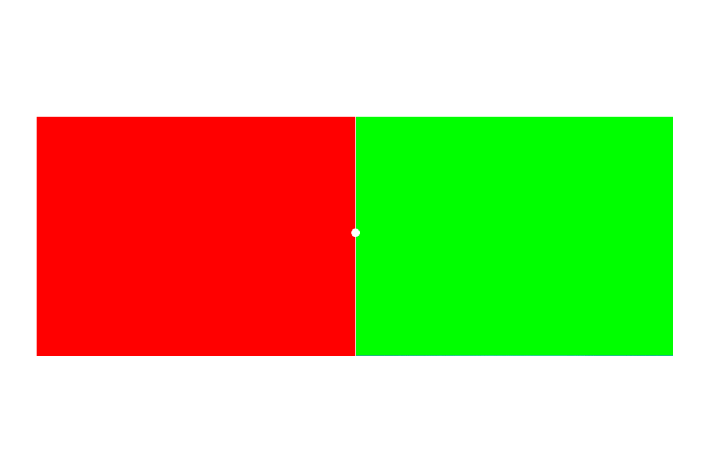
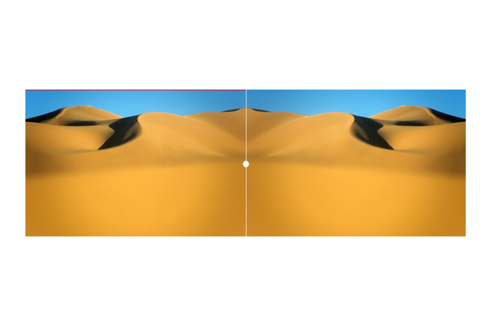

Introduction to Quantitative Reasoning
Martin Schweinberger
2024-08-07

1 Introduction
This tutorial takes a philosophical or history-of-ideas approach and introduces the logical and cognitive underpinnings of the the scientific method. This tutorial is aimed at beginners and does not require prior knowledge.

The aim of this tutorial is to outline why humans are need science and it demonstrates with various examples, which are not restricted to linguistics, that humans are prone to cognitive biases, logical fallacies (e.g. argument ad personam, strawman arguments, post-hoc-ergo propter hoc, argument from popularity), and inappropriate ways of dealing with data (cherry-picking) which are likely to lead to inaccurate conclusions. For example, humans are good (maybe too good) at seeing patterns but not good at understanding randomness. This is the basis for seeing faces in random patterns like the famous face on Mars. The explanation for the human inability to see the world as it is based on evolutionary approaches to our cognitive apparatus. It will be shown using the example of Clever Hans (a horse that was thought to be able to count and perform mathematical operations) that these biases can only be avoided if one applies a methodological approach to acquiring knowledge.
2 Why do we need science?
Before delving deeper into questions relating to defining features or characteristics of science, it is important to understand why we need science in the first place. Let us start out with a very simple and preliminary definition of science as a methodological process used to acquire knowledge about the world based on empirical evidence.
One could argue that we do not need science as we can understand the workings of the world around us not by evidence but by meditating. This is not as trivial as it may sound as this is a valid way of acquiring knowledge in what is called formal sciences such as logic or mathematics. Formal sciences start out with axioms and enlarge knowledge by applying logical operations to statements. Using a logical operation called inference, we can prove that, given certain statements (premises) are true, a derived statement (conclusion) follows with necessity and thus must also be true. For instance, if the statement Socrates is a human being (premise 1) and the All humans are mortal (premise 2) are both true, then we can infer that the statement Socrates is mortal (conclusion) must also be true. Once a given statement (conclusion) is proven to be true, then this conclusion can itself be used as a premise to arrive at new true statements. Formal sciences are extremely powerful when it comes to determining the logically coherence. In other words, formal sciences can be used to construct logically coherent representations of the world around us.
Unfortunately, this procedure to acquire knowledge does not tell us whether the statement I will raise my left arm once I have counted to three or the statement I will raise my right arm once I have counted to three is true. Both options are equally possible and a world in which I raise my left arm is just as logically coherent as a world in which I raised my right arm. As a consequence, we need empirical evidence to determine whether statement (as a side note: I only counted to two and raised neither of my arms). The problem here is that there is potentially an infinite number of possible numbers of logically coherent worlds and in order to determine which of these potential worlds is the world we live in (given that our world is logically coherent which I often doubt). In other words, we need empirical evidence to determine the workings of the world around us.
Errare Humanum Est
All of the above indicates that we need empirical evidence to determine the rules and laws governing empirical reality but it does not tell us why we need science. As we have established above, only empirical evidence can lead the way to determining what the characteristics of the world we live in are. Science comes in as we, as human beings, are not very good at seeing and understanding the world as it is (in fact, we are not able to do so!). To elaborate, when it comes things we are scared of, we rather rely on emotional narratives rather than things that really do us harm. For instance, we are more scared of what is sometimes referred to as stranger danger, i.e. that someone unknown will harm us or people dear to us than people we know while most murders and sexual exploits are committed by people, we know such as our family and friends. Another example would be represented by the movie Jaws while mosquitoes or even cows kill more people (mosquitoes are in fact among the most dangerous animals for humans due to the diseases they transmit).
Besides being more strongly influenced by emotional narratives there are other in-build biases such as our drive to stick to opinions rather than correcting them or switching sides once these are proven incorrect. In other words, we seek confirmation for our believes rather than challenging them. For example,

The Monty Hall Problem
Another reason why we need science, i.e. a methodological approach to evaluating evidence, is that we are simply bad with numbers. Take the famous Monty Hall example:
Monty Hall the host of the TV game show Let’s make a deal in which every participant was given the choice between three doors - behind two of them there was a goat while the other door hid a prize.

| The game in the show went like this: | |
|---|---|
| 1. Every participant would choose one of three doors. |  |
| 2. After the participant had chosen a door, Monty Hall would show the participant a goat behind one of the doors not chosen by the participant. |  |
| 3. Monty would then offer the participant the option to switch doors (to the other door not initially selected). |
Now, what do you think - should you switch doors at that point or doesn’t make a difference?
Well, in fact, you should switch doors and it does make a difference but it is really difficult for us humans to wrap our head around it. So, the chances of winning the prize actually increase when you switch (you can check it out yourselves when you go to this website which simulates many scenarios and confirms that after switching your chance of winning increases to 2 in 3.
| But let’s go over why you should switch together! | |
|---|---|
| Initially, all three doors had a chance of 1 in 3 of hiding the prize. When you chose your door initially, you thus had a 1 in 3 chance of winning the prize while the other doors together had a 2 in 3 chance of winning. |  |
| When Monty Hall opens one door (he will always open a door behind which there is a goat), the 2 in 3 chance concentrate on the door that is left unopened. |  |
| To make it clearer: image, Monty Hall gave you 20 doors to choose from. | |
|---|---|
| You pick one (with a 1 in 20 chance of winning) while the other 19 doors combined have a 19 out of 20 chance to win. |  |
| Next, Monty Hall opens 18 out of the 19 doors you have not initially selected and asks you whether you want to switch to the one unopened door. |  |
You would definitely switch as, in this case, as it is more intuitive for us to see that the chances of winning concentrate on the door that Monty leaves unopened and which we did not initially select.
The Birthday Conundrum
Another interesting way to show that we are not good with numbers relates to the so-called Birthday Conundrum. The birthday conundrum deals with exponential growth and it can best be exemplified by the following scenario: imagine you are in a class consisting of 23 students.
Think Break!
`
- How likely is it that 2 students have the same birthday in a class of 23 students?
`
In a room of just 23 people there’s a 50-50 chance of two people having the same birthday. The vast majority of people will intuitively come up with much higher numbers of students that are required to find a pair of students that have the same birthday. But why is that?
Well, we are quite good with our numeric intuition when it comes to simple addition, subtraction, and multiplication but we are really bad when it comes to exponential growth.
Let us go back to our problem: What are the chances that two students in a class of 23 have their birthday on the same day?
We could list all possible couples and count all the ways they could fit but that would be really labor-intensive. In fact, it would be the same as asking What’s the chance to get one or more heads in 23-coin flips?.
Is there an easier way to solve the coin-flip and the birthday problem?
Yes, there is. We can turn the problem on its head: instead of determining the likelihood of each and every path to get heads, we simply calculate the chance to get only tails (or all separate birthdays).
If there’s a 1% chance of getting only tails (it is, in fact, \(.5^23\) to be precise but let’s stick with 1 percent for the sake of simplicity here), there’s a 99% chance of having at least one head. We do not know if it’s only 1 head or 2 or 15 or 23: there is at least once head, and that is what matters here. If we subtract the probability of the negative of our problem from 1, we get the probability of the scenario that we are interested in.
The same principle applies to birthdays. Instead of finding all possibilities, we find the chance that everyone is different (the negative scenario). We then determine the probability of the positive and have the chance of at least two people having the same birthday. It can be 1 pair, or 2 or 20, but at least two people have the same birthday.
So let’s go over how to calculate the actual probability.
n = 23 days_in_year = 365
The chance of 2 people having different birthdays is:
\[\begin{equation} 1 - \frac{365}{365} * \frac{364}{365} * \frac{363}{365} * ... * \frac{365-23}{365} = 1 - 0.4927028 = 0.5072972 \end{equation}\]
The chance of getting a single miss, i.e. that two specific people have the same birthday, is very high (99.7260%), but when that chance is multiplied given all the possible pairs, the odds of two people having the same birthday decrease very fast. The probability of two students in a class of 23 have the same birthday is 0.5072972 (or approximately 50 percent).
EXERCISE TIME!
`
- What is the probability of two people having the same birthday in a class of 73 students?
Answer
# Number of students
n <- 73
# Total number of days in a year
days_in_year <- 365
# Calculate the probability that all students have different birthdays
prob_all_different <- prod((days_in_year - 0:(n-1)) / days_in_year)
# Calculate the probability that at least two students share the same birthday
prob_at_least_one_shared <- 1 - prob_all_different
# Print the result
prob_at_least_one_shared ## [1] 0.9995608`

Fast and Slow Thinking
A similar point can be made by another example: assume that a ball and a bat together cost 1.10 AUD. The bat costs 1 AUD more than the ball. What does the ball cost?
Most students initially think that the ball costs 10 cents but this is not the correct answer. Do you know why? Well, if the ball costs 10 cents and the bat costs 1 AUD more, then the bat would cost 1.10 AUD and both together would cost 1.20 AUD and not 1.10 AUD. The correct answer is of course 5 cents (0.05 AUD + 1.05AUD = 1.10 AUD).
According to the psychologist Daniel Kahnemann, one possible explanation for this bias is that humans have two different ways of thinking: fast thinking which is very intuitive and quick and slow thinking which takes longer and is more deliberate. While fast thinking is typically a very economical way to decide, slow and deliberate is more precise but more expensive as it takes more time and effort. Science is essentially a method to approach problems, that we would normally use fast thinking to resolve, with slow and deliberate thought.
Randomness
A very powerful cognitive bias that underlies superstitious beliefs or behaviors is that we are very bad at dealing with randomness. In other words, we are prone to see causes or patterns although there may be none. An experiment involving pigeon performed by the psychologist B. F. Skinner. Skinner provided pigeon at random intervals with food pallets. After a while, Skinner noticed that the pigeon exhibited unusual behaviors such as twirling around in circles or picking in a corner. According to Skinner, the behavior that pigeon performed while receiving food was positively enforced. In other words, a pigeon thought that when it performed a certain behavior, this would cause food to fall from the feeder. Something similar can be observed among athletes who stick to certain behaviors such as not shaving etc. because they didn’t shave when they last won. The underlying mechanism is that we assign a causal relationship between some behavior and a certain outcome although the behavior and the outcome may be completely unrelated.
.](https://slcladal.github.io/images/skinnerpidgeon.png)
.](https://slcladal.github.io/images/skinner.png)
A similar cognitive bias underlies many ghost sightings. We are prone to see faces or human figures in random patterns. For example, the famous picture of a face on Mars or faces on toasts. Similarly, if you hear leaves turning over at night, it is likely that you think that someone is following you, as you assign noises rather to agents such as people rather than natural forces.
Bruce Hood, a psychologist at Cardiff University, offers a very interesting evolutionary explanation for this phenomenon. To elaborate, imagine a professor offered you 10 AUD to wear a jumper he brought along for only a minute or so. Most people would take the offer and earn the 10 AUD. However, the professor adds that the jumper belonged to a brutal psychopathic serial killer and asks again whether you would wear the jumper. While some students would still wear the jumper, some students would not wear it given this information and even students who would, state that they would feel less comfortable. The underlying mechanism is that we assume that the jumper is not merely a piece of cloth but that it has changed somehow and acquired something by having been worn by a brutal psychopathic serial killer. While this is completely natural, it is irrational as the jumper is, in fact, merely a piece of cloth. Hood explains that people often assign value to material things which goes to say that people treat objects not only as material consisting of atoms but as things that have something like an essence or a soul. The underlying mechanism, he hypothesizes, adds an evolutionary advantage as people who had this belief were less likely to get close to items or people suffering from diseases and were thus less likely to get infected. This goes to show that irrational thinking or responses can be grounded in rational behavior.
In addition to being generally bad with numbers and assuming agents rather than natural causes, there is another bias, called confirmation bias, which is an inbuilt hindrance to accurate knowledge. Let’s turn to another example to illustrate this. This example is called the Wason Selection Task after Peter Wason who came up with this test. Imaging you are presented with cards that have letters on one side and numbers on the other. Four of these cards are placed on a table before you. Card 1 is an A, card 2 is a K, card 3 is a 2, and the fourth card is a 7. You are told that whenever a vowel is on one side of the card, the other side is an even number. Which of these four cards do you have to turn over to determine whether this rule holds true?
Card 1 | Card 2 | Card 3 | Card 4 |
|---|---|---|---|
A | K | 2 | 7 |
What have you guessed? The most common answer is cards 1 and 2 while the correct answer is actually cards 1 and 4 because the rule does not say whether there are even or odd numbers behind consonants; thus, turning over cards 2 and 3 does not help you in determining whether the rule holds true or not - in fact, cards 2 and 3 are irrelevant for the problem.
Let us now turn to another example to further illustrate cognitive bias: Imaging that I have a rule in my mind and write down 3 numbers which are generated in accordance with my rule. Your task is to find out what the rule is that I have in mind. To help you finding out about that, you are allowed to propose a fourth number and I have to answer whether the proposed number is aligned with my rule or not. After proposing a number, you may then propose what the rule is and I have to tell you whether the proposed rule is the rule I had in mind or not. The numbers I write down are 1, 2 and 4. What do you think is the rule I have in mind and which number would you propose?
Number 1 | Number 2 | Nuber 3 | Number 4 |
|---|---|---|---|
1 | 2 | 4 | ? |
Typically, students first propose 8 (which is in accordance with my rule) and the rule that is typically proposed first is Double the previous number. Unfortunately, this is not the rule according to which I generated the numbers. The next guess is typically 16 (which is also in accordance with my rule) and students propose the rule Square the previous number (which is again incorrect). It is only when students propose numbers that contradict their hypothesized rule that they get closer to finding the actual rule I have in mind.
Actually, the rule I have in mind is very simple as it is The current number must always be bigger than the previous number. This is to show that we intuitively test whether our hypothesized rule is correct, rather than testing whether it is false. A well-reasoned proposal would thus be numbers like 3 or 7 which conflict with the hypothesized rule rather than numbers which comply with it.
This goes to show that we, as humans, aim to support ideas we already have rather than testing our beliefs. Science, however, does exactly the opposite: in the scientific process, ideas, hypotheses and theories are challenged. Support for Ideas or theories comes from failed attempts to disprove them rather than from findings which support them.
Why have we had a look at these examples and quizzes? Basically, the intention here was to convince you that we as humans to not necessarily come to rational conclusions but that there are in-built mechanisms, which systematically lead us astray and cause us to misjudge phenomena. It is important to understand that these biases often have a rational cause but that they are (a) part of human nature and (b) that they are constantly at work and thus constantly lead us astray. And it is here where the scientific method comes in as the scientific method is simply a procedure which prevents us from coming to erroneous conclusions.
The Anthropocentric Bias
Another bias that we as humans are rarely aware of is the anthropological bias. The anthropological bias refers to conceptualizing the world around us in a way that assumes that the world is just as we as humans see the world. Another name for this bias is Experiential Realism. To exemplify what this means, think about what the world would look like for a bee of we were the size of microbes. Bees see ultraviolet - a wavelength of light that we, as humans, cannot directly perceive. This means that the world looks very different for bees. many flowers have evolved to be seen by bees as they rely on bees to spread their pollen. For a bee, a summer meadow looks something like the dark night’s sky does for us: a dark blue background with islands of light that are the flower what reflect ultraviolet radiation (see below).
Vyvyan Evans and Melanie Green describe the anthropological bias and its origin as follows:
However, the parts of this external reality to which we have access are largely constrained by the ecological niche we have adapted to and the nature of our embodiment. In other words, language does not directly reflect the world. Rather, it reflects our unique human construal of the world: our ‘world view’ as it appears to us through the lens of our embodiment.
There are other examples which show that our perception of the world depends on our senses and how they function. have a look at the experiment below.
Experiment Time!
`
- Look at the dot between the red and green squares for about 30 seconds straight (try to really focus on that white dot!). Once the 30 seconds are over, immediately look at the white dot between the mirrored images of the sand dunes. What happens?

`
The left sand dunes appear greenish while the right sand dunes look red. This is because the neuronal networks which are responsible for make use see green have run out of neurotransmitters. As the neurons cannot fire anymore, we see the sand dunes without red (which makes the dune appear green) and without green (which makes the dune appear red).
This example should just draw your attention to the fact that our perception of the world rests upon our senses and our brain.
Another factor which influences the way we perceive the world has to do with something that is called Gestalt and has been studied in subfield of psychology (Gestalt-psychology or Gestalt theory). Gestalt theory has to do with how we perceive shapes by grouping or lumping (unrelated) elements together. Consider the Figure below. Do you see the triangle?

We cannot but see a triangle, although there is no triangle. We simply fill in the blanks and groups the triangles together so that they form a Gestalt - a shape. This becomes obvious if we re-arrange the triangles because, now, you see Pacman!

Patterns and Matters of Habit
Related to but different from the phenomena with Gestalt theory is another interesting way in which our mind manipulates the input to our senses. Have a look at the upside-down faces of Margaret Thatcher below. Does one face strike you as odd?

Probably the picture of Margaret Thatcher on the right strikes you as somewhat odd but have a look at what happens if we turn the pictures around.
Most people are somewhat shocked how distorted the picture on the right really is. This is because our brain compensates the skewness of the Margaret Thatcher’s face in the right picture while it does not normalize the picture when shown in the way that we normally see people. The interesting point is that our brain automatically adjusts the picture of a face based on out previous experience with faces. One could say that our perception - especially of human faces, autocorrects aspects of our visual input based on patterns and expectations build from previous input.

The autocorrection effect also plays on another bias which has to do with face recognition. Because reading and interpreting faces is and has been so important and informative for us, we are prone not only to see or find patterns in randomness but more specifically we are prone to seeing faces or constructing faces from ambiguous input. To see what I mean, have a look at the picture below.
Although the picture does not show a face, we interpret the various elements in the picture to form - in combination - a face. Of course, the face is not emerging from a merely chaotic assemblies of elements but the elements in the picture are arranged to create that effect. And although the arrangement is deliberate in the picture above, it still goes to show that humans are particularly available for suggestive, ambiguous input to be interpreted as human faces. One reason for this is that the context, here understood as the combinatorial effect of various unrelated elements, influences our perception and interpretation of visual input.
Let me clarify this with another example. What symbol do you see in the red circle?

Given that context, with the letters A and C to the left and right of the symbol, the most natural interpretation of the symbol is, of course, a B. However, if the context changes (as you can see below), the interpretation changes with it although the symbol and all its features remain the same.

This goes to show that our perception and interpretation of the world around us is not solely based on the input or the element itself but rather that categorization is context-dependent.
Locical Fallacies and Biases
In this section, we will have a look at things we do or ways we argue that will prevent us from finding out what is really going on. These logical fallacies are very common and noone is exempt from them - we should however, be aware of them and aim to avoid them if we do not want to arrive at wrong conclusions or make erroneous judgments.
Logical fallacies can be defines as flawed, deceptive, or false arguments that can be proven wrong with reasoning and we will briefly inspect some of the the most common logical fallacies below.
Confirmation Bias and Cherry Picking
As creatures of habit, we focus on certain things while we ignore others. This is quite helpful to orient ourselves in a highly complex world but it is unfortunately quite detrimental to the scientific endeavor. This is particularly so as we tend to ignore things or ideas that do not match our expectations. This is called confirmation bias or cherry picking and it is very common - even in science. In order to avoid this logical fallacy, rather than finding evidence that supports our assumptions and views, we need to actively look for evidence that shows that our assumptions are wrong. But while this is the better methodological approach towards finding real answers, it goes against how we intuitively operate. Unfortunately, seeking to confirm one’s view is not only human but leads to deeply misguided conclusions.
Ad Hominem
An ad hominem is when, instead of providing a (factual) counterargument or pointing out problems or inconsistencies in an argument, the person bringing forward the argument is attached - often using slurs such as racist, lefty, Nazi, or the like. As such, the ad hominem fallacy represents the tendency to use personal attacks rather than logic to counter an argument. Ad hominem are also sometimes referred to as mudslinging in public discourse and they are manipulative in that they guide the attention away form the arguments to the personal and emotional level without addressing core issues.
Appeal to Authority
An appeal to authority is a fallacy when someone refers to an authoritative figure as a justification or in support of an argument rather than explaining what this person has argued, found out, or stated. However, this fallacy is tricky because an authority’s stance can represent evidence, but it becomes a fallacy if the person rather than what they showed is used as a justification. An authority should only be referred to as a stand-in for research or a study which that person represents or has conducted - the person itself is typically irrelevant to the topic or the argument.
An example of this fallacy would be if someone said X has said that Y is the case and assumes that Y is true because the authority, X, has said so. Instead, the study or research conducted by X is the cause for Y being likely true, rather than X merely saying so.
Straw Man
The straw man fallacy occurs when the position of someone is misportrayed so that it is easier to argue against it and show it to be a flawed stance. The purpose of this fallacy is to make one’s own position appear superior or stronger than it actually is.
The straw man fallacy derives its name from actual harmless, lifeless straw men - a scarecrow - because, instead of arguing against the position an opponent is actually holding, an easily defeated puppet version of the opponent’s position is attacked that the opponent was never arguing for in the first place.
Argument from Ignorance
The argument from ignorance occurs when it is argues that a proposition must be true because it has not been proven to be false or if there is no evidence against it. An example of the argument from ignorance would be if someone posed No one has ever been able to prove that extraterrestrials exist, so they must not be real or Noone knows how the world came into being, therefore God must be the cause. An appeal to ignorance doesn’t prove anything and only shifts the burden for proof away from the person making a claim.
False Dichotomy
A false dilemma or false dichotomy presents limited options — typically by focusing on two extremes — when in fact more possibilities exist. The phrase “America: Love it or leave it” is an example of a false dilemma.
The false dilemma fallacy is a manipulative tool designed to polarize the audience, promoting one side and demonizing another. It’s common in political discourse as a way of strong-arming the public into supporting controversial legislation or policies.
Slippery Slope
A slippery slope argument assumes that a certain course of action will necessarily lead to a chain of future events. The slippery slope fallacy takes a benign premise or starting point and suggests that it will lead to unlikely or ridiculous outcomes with no supporting evidence.
You may have used this fallacy on your parents as a teenager: “But you have to let me go to the party! If I don’t go to the party, I’ll be a loser with no friends. Next thing you know, I’ll end up alone and jobless, living in your basement when I’m 30!”
Circular Argument
Circular arguments occur when a person’s argument repeats what they already assumed before without arriving at a new conclusion. For example, if someone says, “According to my brain, my brain is reliable,” that’s a circular argument.
Circular arguments often use a claim as both a premise and a conclusion. This fallacy only appears to be an argument when in fact it’s just restating one’s assumptions.
Red Herring
When it comes to fallacies, a red herring is an argument that uses confusion or distraction to shift attention away from a topic and toward a false conclusion. Red herrings usually contain an unimportant fact, idea, or event that has little relevance to the real issue. Red herrings are a very common and they are used when someone wants to shift the focus away from a topic or an argument to something that is easier or safer to address. As such, red herrings are related to shifting from rational to emotional - similar to ad hominem attacks.
Sunk Cost
The so-called sunk cost fallacy occurs when someone continues doing something because of the effort they have already put in - regardless of whether the additional costs outweigh the potential benefits. Sunk cost is a term borrowed from economy where it refers to expenses that can no longer be recovered. An example would be if you continue watching a TV show only because you have already watched some episodes although you are actually not enjoying watching the show - you just to go through with it so the initial costs of watching the TV shows was not “in vein”.
Falling pray to cognitive biases or logical fallacies means that we are constantly deceiving ourselves and therefore need to protect ourselves from our own wrong judgments. To protect ourselves from these natural (systematic) delusions that have been discussed so far, we have developed skeptical or critical thinking skills. Among these skills, the hypothetic-deductive method of science is known as the scientific method . However, these skills are not just there - they have to be learned and trained! Such skeptical skills form the basis of science because science, in its essence, is the search for answers about how the world really works. And in order to avoid being led astray, we have to safeguard us from our own biases by following a methodological and careful approach. The next section will focus on the relationship between science and why it must be methodological.
EXERCISE TIME!
`
- Given what you have learned in this chapter, can you come up with explanations for a belief in ghosts?
Answer
Experiences of ghosts (or what people experience as ghosts) can be caused by many factors, for example, pareidolia which can cause people to interpret random images, or patterns of light and shadow, as faces.- Someone tells you that his grandfather smoked a pack of cigarettes and drank a bottle of whiskey every day and thus claims that smoking and drinking does not harm your health. What is problematic about the conclusion and why is anecdotal evidence not appropriate?
Answer
When aiming to answer how one factor (e.g., smoking) affects another factor (e.g., developing cancer), we are typically interested in general patterns or trends rather than unusual or unrepresentative cases. As such, individual anecdotes are not useful to answer questions asking for the relationship between factors, because we do not know how common or prototypical the anecdotal case is. Even many anecdotes do not qualify as data as anecdotes are likely biased and not representative. To determine the relationship between factors, we would need systematic and unbiased observation .`
3 What is science?
This chapter elaborates further on basic concepts of science but focuses less on the philosophical underpinning and more strictly on the craftsmanship aspect. Thus, it introduces basic concepts science (e.g. empirical versus pure science, falsification, inter-subjectivity, internal and external validity) and the scientific method.
Clever Hans
So, what is science? Well, let’s start with the example of Clever Hans to illustrate how science is applied to phenomena.
Clever Hans was horse who responded to questions requiring mathematical calculations by tapping his hoof. If asked by his master, William Von Osten, what is the sum of 3 plus 2, the horse would tap his hoof five times. It appeared the animal was responding to human language and was capable of grasping mathematical concepts. It was 1891 when Hans became public but only in 1904 it was discovered by Oskar Pfungst that the horse was responding to subtle physical cues. Yet, more than a dozen scientists observed Hans and were convinced there was no signaling or trickery. But the scientists were wrong.
Pfungst noted that when the correct answer was not known to anyone present, Clever Hans didn’t know it either. And when the horse couldn’t see the person who did know the answer, the horse didn’t respond correctly. This led Pfungst to conclude that the horse was getting visual cues, albeit subtle ones. It turned out that Von Osten and others were cuing Hans unconsciously by tensing their muscles until Hans produced the correct answer. The horse truly was clever, not because he understood human language but because he could perceive very subtle muscle movements.
The fact that it took a methodological and very careful approach to find out why the hoarse appeared to be able to do math is very telling. So, we use science because it effectively protects us from being deceived by others (which would be bad) and, more importantly, by ourselves (which is much worse). The consistent application of the scientific method not only brings insight into how the world really works but it allows us to find ways in which the world around us can then be used to our advantage (fire, wheel, agriculture, magnetism, steam engine, telephone, microwave, nuclear fusion, etc.),
So, what is science?
Science is an unbiased, fundamentally methodological enterprise that aims at building and organizing knowledge about the empirical world in the form of falsifiable explanations and predictions by means of observation and experimentation. (MS)
Science is the effort to understand how the universe works through the scientific method, with observable evidence as the basis of that understanding.

Which varieties of science are there?
Empirical Science(s) examine phenomena of reality through the scientific method (cf.), with the aim of explaining and / or predicting them (for example, functional linguistics, biology, astronomy, sociology, …).
Formal Science(s) examine systems of abstract constructs using axiomatically set or derived rules (for example, mathematics, formal logic, theoretical computer science, system theory, chaos theory, formal linguistics, …).
Popper, falsification, and scientific progress

Sir Karl Raimund Popper was a Austrian-British academic and public figure who vigorously defended liberal democracy and the principles of social criticism that he believed made a flourishing open society possible. In the context of scientific thinking, Popper is important because he is arguably the most important philosopher of science - probably best known for his realization that nothing can be proven in the empirical sciences, but that hypotheses can and need to be falsified. This means that in contrast to the formal sciences, where statements can be proven once certain axioms are accepted, any knowledge that is produced by the empirical sciences is always, and has to be preliminary which implies that the empirical sciences represent an ongoing process.
What does this mean and why can empirical sciences not prove?
Well, logically speaking, no number of observations of something can confirm a scientific theory. However, a single counterexample can be enough to show that a theory is false. Imagine someone states that all swans are white, any number of white swans cannot prove that that statement is correct, but a single black swan immediately falsifies the statement.
It is important to note here that to say that something is falsifiable does not mean that it is false or wrong or fake: it simply means that it can, in principle, be shown to be false by observation or by experiment.
According to Popper, falsifiability is the defining criterion of what is and what is not science: a theory can only be considered scientific if, and only if, it is falsifiable. This led him to refute claims that both psychoanalysis and Marxism are scientific because these theories are not falsifiable.
There is an apparent progress of scientific knowledge, meaning that our understanding of the universe appears to be improving over time. In Popper’s view, this advance of scientific knowledge is an evolutionary process: competing theories are systematically subjected to attempts at falsification which leads to error elimination - so that falsification performs similar function for science that natural selection performs for biological evolution. Theories that better survive the process of refutation are not more true, but rather, more fit. Consequently, just as a species’ biological fitness does not ensure continued survival, neither does rigorous testing protect a scientific theory from refutation in the future. Yet, as it appears that the engine of biological evolution has, over many generations, produced adaptive traits equipped to deal with more and more complex problems of survival, likewise, the evolution of theories through the scientific method may progress. For Popper, it is in the interplay between the tentative theories (conjectures) and error elimination (refutation) that scientific knowledge advances - in a process very much akin to the interplay between genetic variation and natural selection.
What is (empirical) Linguistics?
Linguistics is commonly defined as the the scientific study of language or individual languages and linguists try to uncover the systems behind language, to describe these systems, and to theoretically explain and model them (Evans and Green 2006). Linguistics who work empirically conduct research on linguistic phenomena based on observations of reality. As such, (empirical) linguistics is descriptive rather than prescriptive in nature.
How does the scientific method work in linguistics?
In empirical research typically follows the scheme described below. This scheme is also referred to as the scientific circle and we will use the example of having lost your keys to exemplify how it works.
So, let’s imagine you lost your key: in a first step we make an observation (keys are not here). In a second step, we ask ourselves where the keys may be (research question). In a third step, we come up with an idea where the keys may be (hypothesis). Then, we think about where we have lost the keys before (literature review). Next, we look for the keys where we expect them to be (empirical testing), then, we evaluate the result of the test (was hypothesis correct), and finally, we either have found the keys (hypothesis was correct) or not (keys are still missing) which causes us to come up with another idea and we need to go through the same steps again.
A slightly more elaborate depiction of this scenario with the equivalent steps in the scientific circle is listed below.
- Make an observation (e.g., My keys are gone!)
- Formulate a research question (e.g., Where are my keys?)
- Deduce a test hypothesis (H1) based on observation (e.g. My keys are on the table next to the TV!)
- Formulate null hypothesis (H0) (e.g., My keys are not on the table next to the TV!)
- Determining the level of significance at which the H0 is rejected
- Formulate potential results: what results are possible and what do they mean for the H0 and H1? (My keys are not on the table next to the TV!: H0 cannot be rejected, formulate new H1)
- Design experiment/study/research (e.g., I will go over to the TV and see if my keys on the table next to the TV.)
- Conduct experiment/study/research (e.g., Actually go over to the TV and see if my keys on the table next to the TV.)
- Statistical analysis
- Interpretation of the results (e.g., My keys are not on the table next to the TV so I must have lost them elsewhere!)
- In case H0 could not be rejected: Formulate new H1. (e.g., My keys are on the kitchen table!)
Think Break!
`
Apply the scientific circle to a study of the existence of the Loch Ness monster.
You want to investigate whether the speech of young or old people is more fluent: how could you go about testing this?
`
We will stop here with our introduction to quantitative reasoning. If you are interested in learning more, we highly recommend that you continue with our tutorial on basic concepts in quantitative research.
Citation & Session Info
Schweinberger, Martin. 2024. Introduction to Quantitative Reasoning. Brisbane: The University of Queensland. url: https://slcladal.github.io/introquant.html (Version 2024.08.07).
@manual{schweinberger2024introqant,
author = {Schweinberger, Martin},
title = {Introduction to Quantitative Reasoning},
note = {https://slcladal.github.io/introquant.html},
year = {2024},
organization = "The University of Queensland, School of Languages and Cultures},
address = {Brisbane},
edition = {2024.08.07}
}sessionInfo()## R version 4.3.2 (2023-10-31 ucrt)
## Platform: x86_64-w64-mingw32/x64 (64-bit)
## Running under: Windows 11 x64 (build 22631)
##
## Matrix products: default
##
##
## locale:
## [1] LC_COLLATE=English_Australia.utf8 LC_CTYPE=English_Australia.utf8
## [3] LC_MONETARY=English_Australia.utf8 LC_NUMERIC=C
## [5] LC_TIME=English_Australia.utf8
##
## time zone: Australia/Brisbane
## tzcode source: internal
##
## attached base packages:
## [1] stats graphics grDevices utils datasets methods base
##
## other attached packages:
## [1] tufte_0.13 cowplot_1.1.3 magick_2.8.4 lubridate_1.9.3
## [5] forcats_1.0.0 stringr_1.5.1 dplyr_1.1.4 purrr_1.0.2
## [9] readr_2.1.5 tidyr_1.3.1 tibble_3.2.1 ggplot2_3.5.1
## [13] tidyverse_2.0.0 flextable_0.9.6 knitr_1.46
##
## loaded via a namespace (and not attached):
## [1] gtable_0.3.5 xfun_0.44 bslib_0.7.0
## [4] tzdb_0.4.0 vctrs_0.6.5 tools_4.3.2
## [7] generics_0.1.3 curl_5.2.1 klippy_0.0.0.9500
## [10] fansi_1.0.6 highr_0.11 pkgconfig_2.0.3
## [13] data.table_1.15.4 assertthat_0.2.1 uuid_1.2-0
## [16] lifecycle_1.0.4 compiler_4.3.2 textshaping_0.4.0
## [19] munsell_0.5.1 httpuv_1.6.15 fontquiver_0.2.1
## [22] fontLiberation_0.1.0 htmltools_0.5.8.1 sass_0.4.9
## [25] yaml_2.3.8 later_1.3.2 pillar_1.9.0
## [28] crayon_1.5.2 jquerylib_0.1.4 gfonts_0.2.0
## [31] openssl_2.2.0 cachem_1.1.0 mime_0.12
## [34] fontBitstreamVera_0.1.1 tidyselect_1.2.1 zip_2.3.1
## [37] digest_0.6.35 stringi_1.8.4 fastmap_1.2.0
## [40] grid_4.3.2 colorspace_2.1-0 cli_3.6.2
## [43] magrittr_2.0.3 crul_1.4.2 utf8_1.2.4
## [46] withr_3.0.0 gdtools_0.3.7 scales_1.3.0
## [49] promises_1.3.0 timechange_0.3.0 rmarkdown_2.27
## [52] officer_0.6.6 hms_1.1.3 askpass_1.2.0
## [55] ragg_1.3.2 shiny_1.8.1.1 evaluate_0.23
## [58] rlang_1.1.3 Rcpp_1.0.12 xtable_1.8-4
## [61] glue_1.7.0 httpcode_0.3.0 xml2_1.3.6
## [64] rstudioapi_0.16.0 jsonlite_1.8.8 R6_2.5.1
## [67] systemfonts_1.1.0